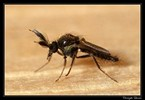
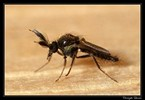
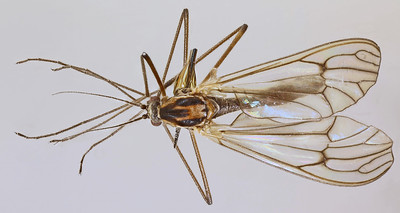
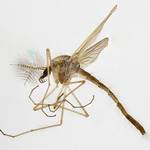
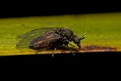
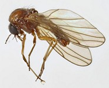
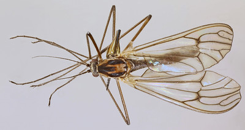
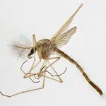
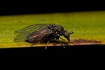
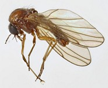

 







Key to families of Culicomorpha
1.
- Ten veins or their branches reaching the wing margin; costa continuous around wing.


Culicoidea
- Wing with 7 or less than 7 marginal veins reaching the wing margin; costa not continuous around wing, with a break,
or, usually ending before or near wing tip.


2
- Antenna short, flagellum nearly bare, or short-setose. Wing broad..

Simuloidea
- Antenna much longer than head, and distinctly hairy, typically more so in male than in female. Wing usually narrow.
3
- Two branches of M present: M2 usually distinct, sometimes weakened at base, rarely obsolescent;
never more than two branches of R reaching wing margin. If R2+3 present, crossvein-like and forming a closed cell r1 (first radial cell).
Anterior thoracic spiracle nearly round, separated (sometimes narrowly) from postspiracular membrane by dorsal extension of anepisternite,
and situated nearly level with lower margin of paratergite. Mouthparts piercing. Postnotum usually without a longitudinal groove.


Ceratopogonidae
- Wing with one branch of M present, M2 never apparent; usually three branches of R reaching wing margin. If R2+3 present, ending in wing margin.
Wingless flies keys out here. Anteriory thoracic spiracle distinctly oval, open posteriorly to postspiracular membrane, and situated well below level
of lower mar-gin of paratergite. Mouthparts not piercing. Postnotum usually with a longitudinal groove.

Chironomidae